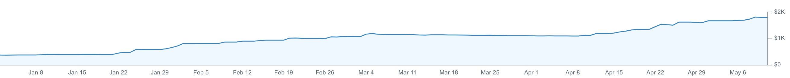
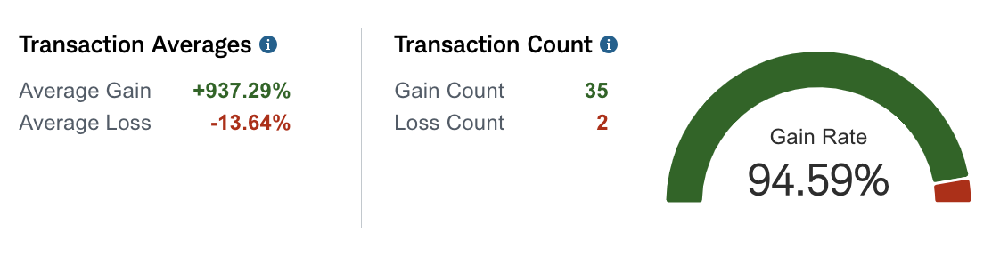
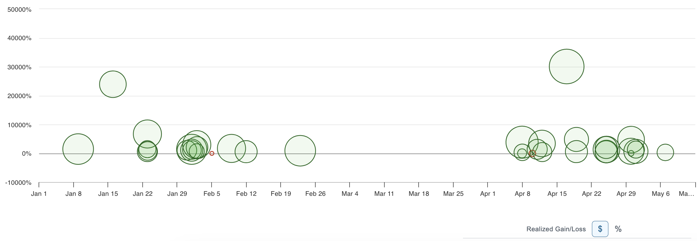

Reverse Stock Split Trading Bot:
Project Overview
Revenue From the First 6 months of running the RSS Bot
The reverse stock split trading bot is a project that can run fully automated without human intervention to generate passive income for the user. The bot uses web automation tools like puppeteer to interact with the online trading platforms of popular brokerage firms such as Schwab, Fidelity, and Robinhood. The bot focuses exclusively on finding and trading stocks where their company is about to perform a reverse stock split. There are two main functions that the bot will carry out for the user, buying the stock before the split occurs, and selling the stock once it has hit a target price. The bot will perform both of these functions on a regular automated schedule without the need for any user intervention.
When the bot performs its buy function, it will start by utilizing a web scraper I have built for this project. It will scour the internet for information on when the next reverse stock split of a publicly traded company will occur. A company is required to release information publicly 24 hours in advance if they are considering performing such an action so their shareholders can be aware of what is going on, so naturally this information is available online as well. There are even public forums and calendar-type websites dedicated to keeping track of this information and putting it all in one convenient place. Once the bot has conducted its research and is at least 90% sure that the reverse stock split will occur, it will then utilize a 3rd-Party API that I have constructed using web automation tools, and purchase the shares on the user's account through a brokerage platform of the user's choice. The splits are not always announced exactly 24 hours in advance, so the bot will perform this research every hour on days where the stock market is open to ensure that it capitalizes on as many splits as possible. Right now it is averaging 5 splits found a week, which is on equal pace with the most popular forums out there for this purpose.
The other main function that the bot carries out is the selling of user shares once they have hit the target price. This will be discussed more later, but one of the main purposes of a company performing a reverse stock split is to raise the price of their shares above the $1.00 mark so that they can be listed on a major exchange. So the bot will once more untilize the 3rd-Party API I have created to scan the current holding of the user for stock that have split and climbed over the $1.00 mark in market value. Once the split has been performed, further profit is no longer overwhelmingly likely, so the bot will sell these shares to net the profit it has guarenteed so far, and not attempt to persue further gains. With the cutoff price being only one dollar, it may seem like there is not much profit to be found here, but thanks to the speed and power of automation, if something can be done once, it can be done many times very quickly, and the profits follow suit.
The percentage of profitable trades the bot has made is far in the green
What is a Reverse Stock Split?
A reverse stock split is a corporate action where a company decreases the number of its outstanding shares and increases the share price proportionally. This is often done without changing the overall market capitalization of the company. For example, in a 1-for-10 reverse stock split, a shareholder who owned 100 shares priced at $1 each would end up owning 10 shares priced at $10 each after the split. Overall, a reverse stock split is used primarily as a tool to manage the perceptions and administrative aspects of a company's stock, rather than as a means to directly alter the company’s underlying financial health.
Here are the main characteristics of a reverse stock split:
- Reduction in Shares: The total number of shares outstanding is reduced by a specific ratio, such as 1-for-5, 1-for-10, etc.
- Increase in Share Price: The price per share increases proportionally to the reduction in the number of shares. This adjustment is made to reflect the reduced number of shares while maintaining the company's market capitalization.
- Neutral Impact on Market Cap: Ideally, the market capitalization of the company (the total value of all shares) remains the same immediately after the reverse split, as the increase in share price offsets the decrease in the number of shares.
This is the gain/loss ratio of the trades placed on an average account the bot manages since the start of the project
Why are Reverse Stock Splits performed?
A company might perform a reverse stock split for several reasons, often related to improving the stock's market perception or meeting regulatory requirements:
- Boost Share Price: A reverse stock split reduces the number of shares outstanding, which typically results in an increase in the price per share. This can make the stock appear more valuable or more stable, potentially attracting more investors.
- Meet Exchange Listing Requirements: Many stock exchanges have minimum share price requirements. If a company’s stock price falls too low, it risks being delisted. A reverse stock split can increase the share price to comply with these minimums.
- Improve Marketability: Higher priced stocks are sometimes seen as more credible and stable by investors. By increasing the stock price, a reverse stock split can enhance the stock's appeal.
- Reduce Administrative Costs: With fewer shares outstanding, a company may lower costs related to dividends and shareholder communications.
- Avoid Perception of Financial Distress: Companies with very low share prices are often perceived as being in financial distress. Increasing the share price through a reverse stock split can help mitigate this perception.
Despite these potential benefits, reverse stock splits can also be viewed negatively by the market, as they might signal that a company has been underperforming. Therefore, the impact of a reverse stock split can vary based on the specific context and market conditions.
This a chart of the realized gain/loss of every trade the bot has made on an average account it manages, scored by percent gain
Where does the money come from?
The majority of the profit in this project is made through the rounding up of fractional shares we own after a RSS occurs. When a reverse stock split occurs, any fractional shares that result from the consolidation of the existing shares can pose an issue both for the company and the shareholders. Many brokerages will simply round the shareholder up to the nearest full share instead of dealing with the issue. Here are some reasons why a brokerage firm might round up these fractional shares to the nearest whole number after a reverse stock split:
- Simplification of Ownership: Fractional shares can complicate both the brokerage's and the company's record-keeping. Rounding up fractional shares to whole shares simplifies the ownership records, making it easier to manage accounts.
- Avoiding Small Dollar Transactions: Dealing with fractional shares can be inefficient, especially if the monetary value of the fraction is very low. By rounding up, brokerages can avoid the need to handle these small transactions, which might not be cost-effective.
- Regulatory or Policy Compliance: Some brokerage firms might have policies or agreements that specify rounding up as the method for handling fractional shares resulting from corporate actions like reverse splits. This can also align with the corporate policies of the issuing company.
- Market Practice and Uniformity: Rounding up fractional shares to whole shares is often a common market practice following reverse splits, providing a standard approach that aligns with what investors might expect in such scenarios.
These actions not only help maintain a positive relationship with clients but also ensure that administrative processes remain streamlined and cost-effective.

Final thoughts or additional commentary regarding the last image. This could connect back to the overall theme or objective of the project.
Future Plans for the Project:
...